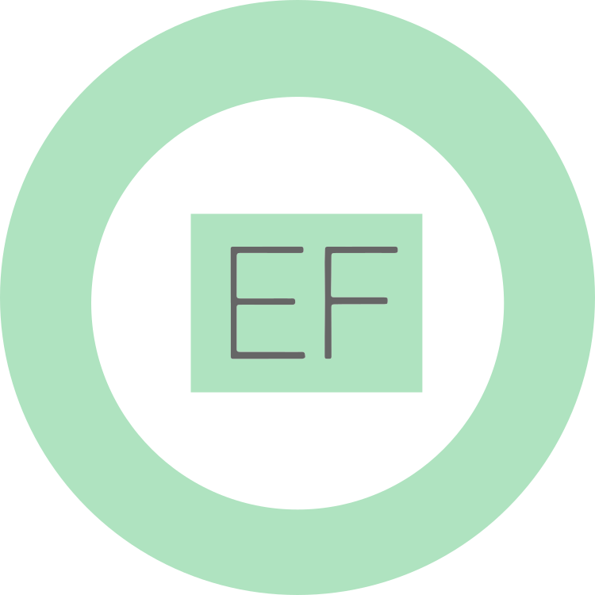
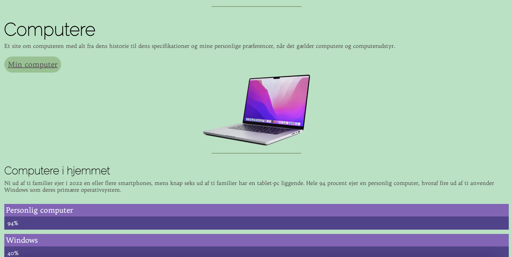
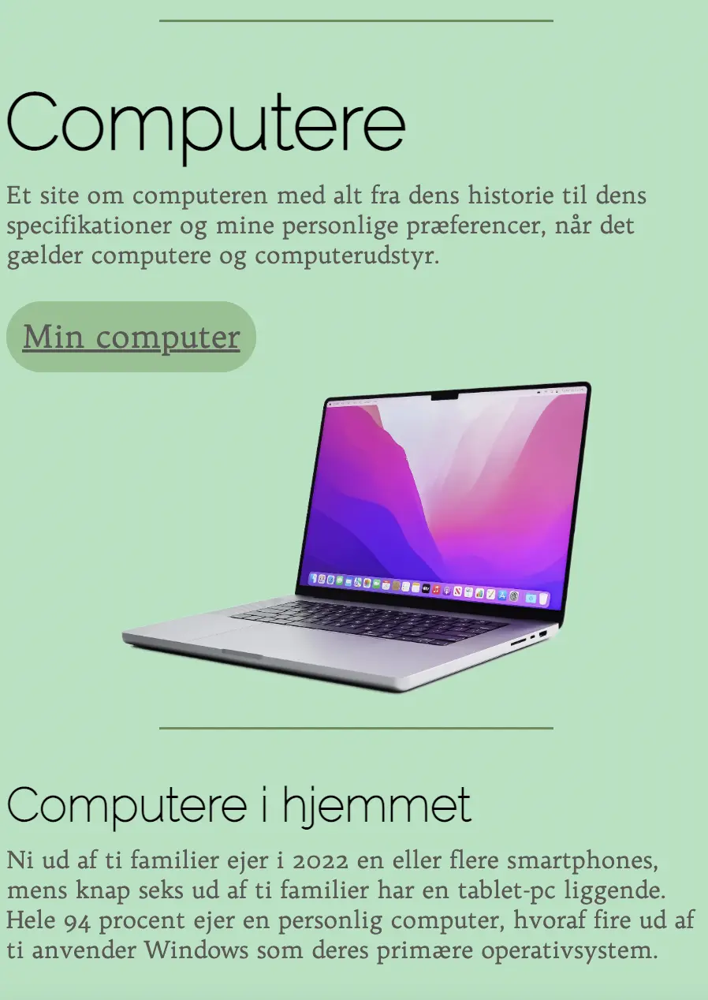
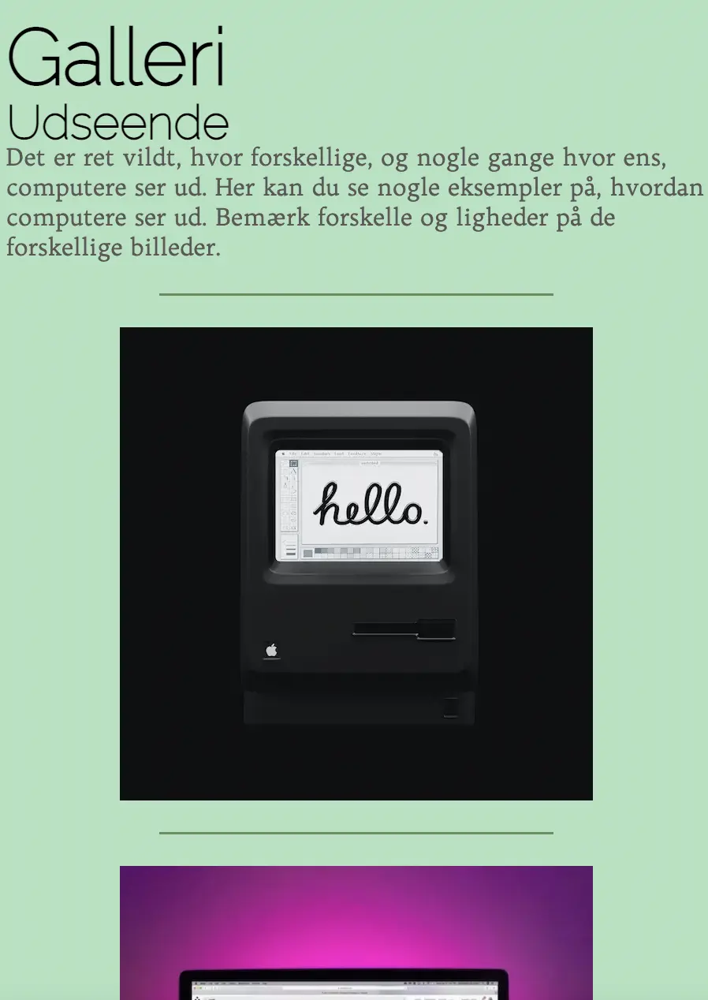

WEBSITE // MIN COMPUTER
Det første projekt var studiestartsprøven. Her blev vi udfordret i grundlæggende web, og lærte
basisfunktioner i
programmet Visual Studio Code, samt at uploade via. FileZilla til eget domæne. Vi blev undervist i
grid, og lærte at
følge layout og wireframe-diagrammer. Jeg blev også introduceret til media query, da vi skulle lave
siden om til
mobilsite.
Jeg blev inspireret af de givne billeder, og valgte at lave et grønt og lilla tema på min side. På
min forside brugte
jeg border og background color til at lave de lilla bokse. Derudover brugte jeg margin til at skabe
luft mellem mine
elementer og classes til at opdele dem.
Der er mange ting, jeg ville gøre om, hvis jeg skulle lave Min Computer-sitet igen. Men det mest
essentielle ville nok
være at udnytte flere af funktionerne, frem for kun at bruge margin og classes.


